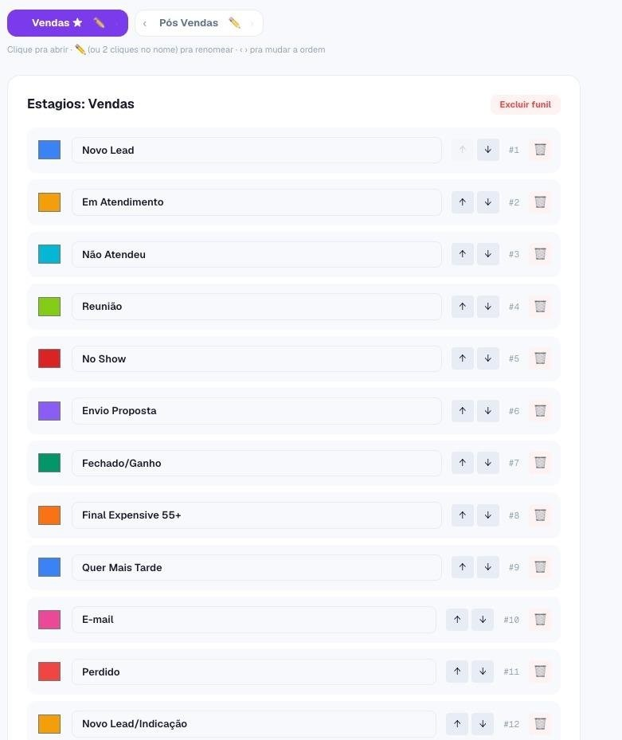
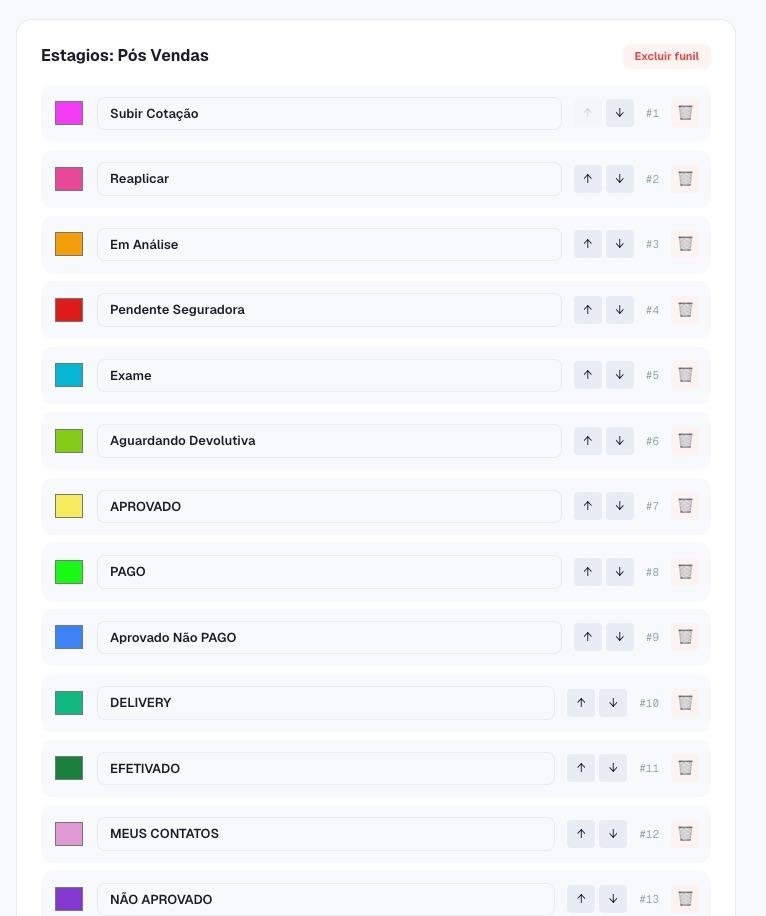
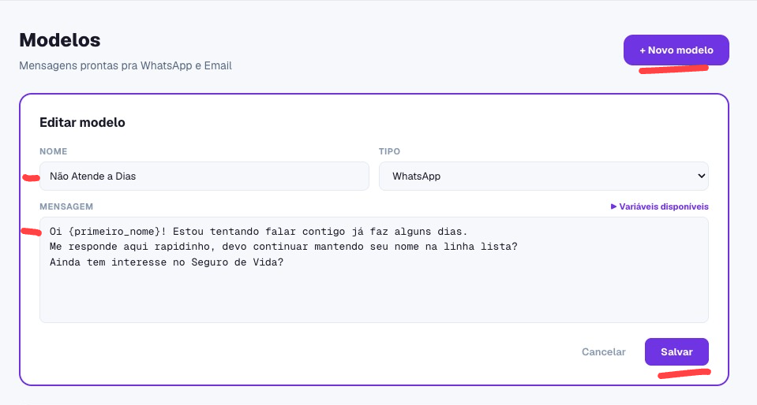
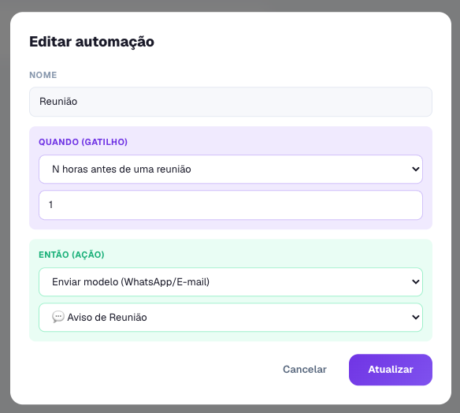
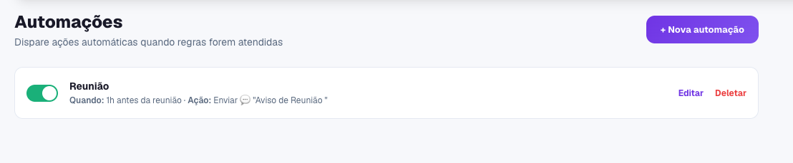
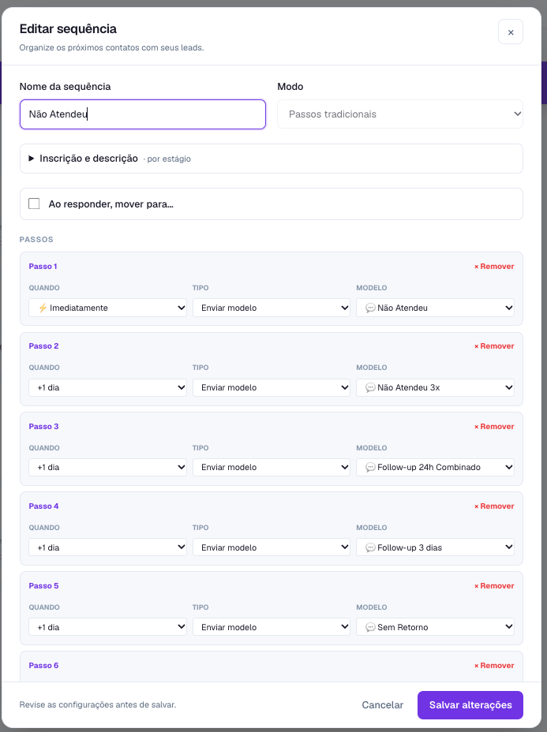
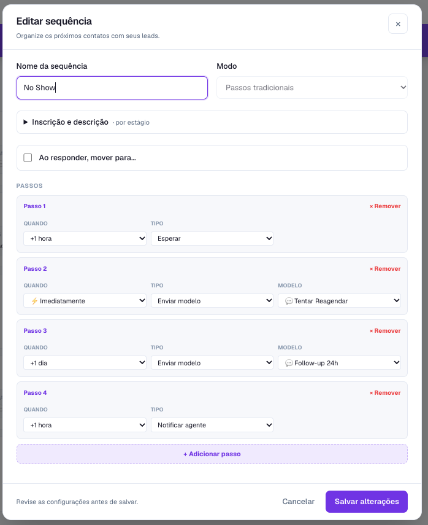

Ajustar o pipelineOrganize os estágios do funil na sequência padrão do time
- Abra o gerenciador de pipeline. Vá em Pipeline e, no canto direito da tela, clique em + GERENCIAR.
- Ajuste os estágios na sequência. Clique no nome do funil para abri-lo. Para renomear, use o ✏️ ou dê 2 cliques no nome; as setas ‹ › mudam a ordem dos funis. Dentro do funil, use as setas ↑ ↓ para mudar a ordem dos estágios e a lixeira para excluir. Deixe os dois funis exatamente nesta sequência:
| # | Funil Vendas ★ | # | Funil Pós Vendas |
|---|---|---|---|
| 1 | Novo Lead | 1 | Subir Cotação |
| 2 | Em Atendimento | 2 | Reaplicar |
| 3 | Não Atendeu | 3 | Em Análise |
| 4 | Reunião | 4 | Pendente Seguradora |
| 5 | No Show | 5 | Exame |
| 6 | Envio Proposta | 6 | Aguardando Devolutiva |
| 7 | Fechado/Ganho | 7 | APROVADO |
| 8 | Final Expense 55+ | 8 | PAGO |
| 9 | Quer Mais Tarde | 9 | Aprovado Não PAGO |
| 10 | 10 | DELIVERY | |
| 11 | Perdido | 11 | EFETIVADO |
| 12 | Novo Lead/Indicação | 12 | MEUS CONTATOS |
| 13 | NÃO APROVADO |


Criar os modelos de mensagemMensagens prontas de WhatsApp para cada etapa do atendimento
- Vá em Modelos e clique em + NOVO MODELO.
- Nome: use o nome do modelo exatamente como está abaixo.
- Tipo: WhatsApp.
- Mensagem: copie o texto. Os campos entre chaves, como
{primeiro_nome}e{agente}, são preenchidos automaticamente pelo CRM. Veja a lista completa em ▸ Variáveis disponíveis. - Clique em SALVAR. Repita para os 17 modelos.

Os 17 modelos, prontos para copiar
Primeiro contato
Oi {primeiro_nome}! Aqui é {agente}, recebi sua solicitação. *Posso te enviar sua cotação agora?*
Oi {primeiro_nome}, recebi sua solicitação. Posso te enviar sua cotação agora?
Oi {primeiro_nome}! Aqui é {agente}. Você preencheu um formulário sobre seguro de vida resgatável no Facebook/Instagram. Acabei de entrar em contato e vou retornar mais tarde! Qual seria o melhor horário para eu explicar como funciona?
Oi {primeiro_nome}! Aqui é {agente}, acabei de entrar em contato contigo e você não atendeu. Vou retornar mais tarde, ok?
Olá {primeiro_nome}! Tentei te ligar 2x, por isso estou te mandando esta mensagem. Vou te ligar novamente às 2 horas, tudo bem?
Olá {primeiro_nome}! Tentei falar contigo hoje algumas vezes, acredito que está corrido por aí. Vou retornar amanhã, combinado?
Olá {primeiro_nome}! Não consegui falar com você ontem. Como combinado, estou retornando. Ainda tem interesse em saber sobre o Seguro de Vida Resgatável? Qual seria o melhor horário?
Sem resposta
Oi {primeiro_nome}! Tentei falar contigo e não tive mais seu retorno! Me responde aqui rapidinho: devo continuar mantendo seu nome na minha lista? Ainda tem interesse no Seguro de Vida?
Oi {primeiro_nome}! Estou tentando falar contigo já faz alguns dias. Me responde aqui rapidinho: devo continuar mantendo seu nome na minha lista? Ainda tem interesse no Seguro de Vida?
Reunião
Oi {primeiro_nome}! Aqui é {agente}, passando para confirmar a nossa conversa sobre o seguro de vida daqui a 1 hora, ok?
Oi {primeiro_nome}! Combinamos de conversar sobre o seguro de vida, reservei este horário e você não atendeu! Aconteceu alguma coisa?
Oi {primeiro_nome}! Como não conseguimos falar hoje como combinado, vamos reagendar para esse mesmo horário amanhã?
Proposta e objeções
Oi {primeiro_nome}! Enviei a sua cotação ontem e não tive mais seu retorno. Vamos dar continuidade ou era apenas curiosidade?
Então, {primeiro_nome}!
A nossa cotação é personalizada. Pelo WhatsApp eu posso te passar um plano simples, sem muitos recursos ou benefícios. Mas a nossa principal proposta é *montarmos juntos o melhor plano para você*, que é resgatável e acumula valor.
Aqui nos EUA, o seguro de vida é uma ferramenta financeira importante de acumulação, não funciona como uma tabelinha de preço.
E além de tudo, esse plano te protege em caso de doenças, acidentes e invalidez. Se alguma coisa grave acontecer, você está protegido em vida e recebe o valor para usar como achar melhor.
O que você escolhe?
Plano Simples ou Plano Resgatável?
Pós-venda e relacionamento
🎉🎉 Ótima notícia, {primeiro_nome}! Seu seguro de vida foi aprovado pela seguradora! 🥳✅ Fiquei muito feliz com esse resultado e em poder acompanhar você durante todo esse processo. Agora seguimos para as próximas etapas, e vou te orientando sobre tudo o que for necessário.
Parabéns pela aprovação! 🎊 É muito bom saber que você está dando esse passo tão importante para proteger você e sua família. 💙
😊 Só para avisar que o pagamento será descontado em até 2 ou 3 dias, ou na data que combinamos. Qualquer dúvida, estou à disposição! 💙 Assim que der tudo certo, envio a sua documentação, ok? 😊🌷
Olá, {primeiro_nome}! 🎉🥳 Passando para desejar um feliz aniversário! 🎂✨ Que seu novo ciclo seja cheio de saúde, alegria, conquistas e muitos momentos especiais ao lado de quem você ama. 💙🎁 Aproveite muito o seu dia! 🎊😊
Criar a automação de reuniãoO CRM envia o aviso de reunião sozinho, 1 hora antes do horário marcado
- Vá em Automações e clique em + NOVA AUTOMAÇÃO.
- Nome: Reunião.
- Quando (gatilho): “N horas antes de uma reunião”, com o número 1.
- Então (ação): “Enviar modelo (WhatsApp/E-mail)” e escolha o modelo Aviso de Reunião.
- Clique em SALVAR.

Confira se ficou ligada
A automação aparece na lista com a chave verde ligada e o resumo Quando: 1h antes da reunião · Ação: Enviar “Aviso de Reunião”. Para mudar, use Editar; para desligar sem apagar, desative a chave.

Criar as sequências de follow-upO CRM manda as mensagens de acompanhamento sozinho, no ritmo certo
A sequência é uma cadência de contatos automática: você define os passos uma vez e o CRM envia cada mensagem no tempo programado para todo lead que entrar nela. Assim nenhum lead fica esquecido em Não Atendeu ou No Show.
Como criar uma sequência
- Abra Sequências e clique para criar uma nova (ou em editar, para ajustar uma existente).
- Nome da sequência: use o mesmo nome do estágio do funil (ex.: Não Atendeu, No Show).
- Modo: Passos tradicionais.
- Inscrição e descrição (por estágio): abra e escolha o estágio do funil que coloca o lead na sequência.
- Ao responder, mover para… (opcional): marque e escolha o estágio para onde o lead vai quando responder — assim ele sai da cadência e volta para o seu atendimento.
- Monte os passos com + Adicionar passo. Em cada passo, defina:
- Quando: ⚡ Imediatamente, +1 hora, +1 dia… (o tempo conta a partir do passo anterior).
- Tipo: Enviar modelo (manda uma mensagem do Passo 2), Esperar (só aguarda) ou Notificar agente (avisa você para agir).
- Modelo: qual mensagem enviar, quando o tipo for Enviar modelo.
- Revise e clique em Salvar alterações. Para tirar um passo, use × Remover.
Sequência “Não Atendeu”
| Passo | Quando | Tipo | Modelo |
|---|---|---|---|
| 1 | ⚡ Imediatamente | Enviar modelo | Não Atendeu |
| 2 | +1 dia | Enviar modelo | Não Atendeu 3x |
| 3 | +1 dia | Enviar modelo | Follow-up 24h Combinado |
| 4 | +1 dia | Enviar modelo | Follow-up 3 dias |
| 5 | +1 dia | Enviar modelo | Sem Retorno |
O lead que não atende recebe uma mensagem por dia até a pergunta final do Sem Retorno.

Sequência “No Show”
| Passo | Quando | Tipo | Modelo |
|---|---|---|---|
| 1 | +1 hora | Esperar | — |
| 2 | ⚡ Imediatamente | Enviar modelo | Tentar Reagendar |
| 3 | +1 dia | Enviar modelo | Follow-up 24h |
| 4 | +1 hora | Notificar agente | — |
Uma hora depois da reunião perdida, o CRM propõe reagendar; no dia seguinte faz o follow-up e, uma hora depois, avisa você para ligar.

Pronto: confira tudoO seu CRM no padrão WDT
- ✅ Funis Vendas e Pós Vendas na sequência padrão.
- ✅ Os 17 modelos cadastrados com os nomes exatos.
- ✅ Automação Reunião ligada (chave verde).
- ✅ Sequências Não Atendeu e No Show salvas e com os modelos certos em cada passo.